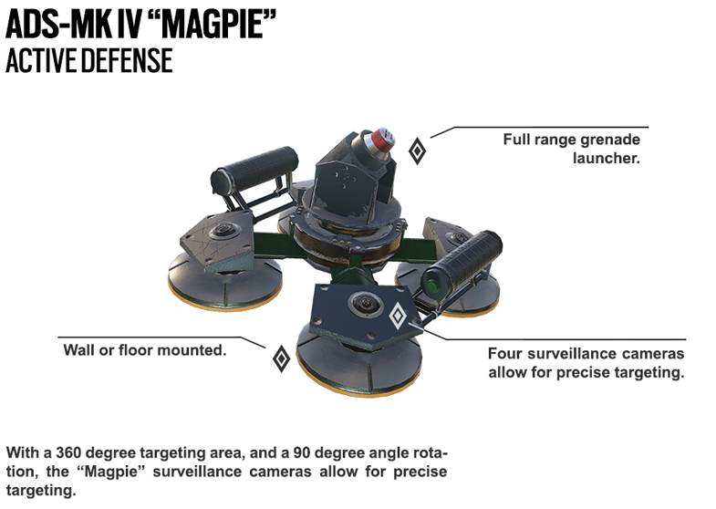

Marius (Jager) Streicher
Born
March 9, 1979 in Dusseldorf, Germany

Bio
The first objective of life i wanted to achieve was to join the Bundespolizei(BPOL). When I was 21 I graduated top of the class with MFA Munich Flight Academy GmbH. I later became a Helicopter Technician for the BPOL Aviation Group. While I was there I decided to make a ground-based device that destoys small projectiles, this Active Defense System (ADS) prototype caught the attention of the GSG-9. The United States had been under attack by a mysterious terrorist organization, since the invention of the ADS the U.S. government saw use in me. They ressurected an old op group by the name of Rainbow Six, and I was apart of it. Our last mission was Barlett University, after that I was sent home to the GSG-9 waiting for redeployment.
Active Defense System Prototype
This prototype is the more portable baby brother of the AMAP-ADS, this ADS is the first of its kind to be the size of a small box. Like the older brother, this ADS destroys anything bigger than a bullet.
